Inhalt Index DeskTop Bronstein

 Algebra und Diskrete Mathematik Elementare Zahlentheorie Kongruenzen und Restklassen
Algebra und Diskrete Mathematik Elementare Zahlentheorie Kongruenzen und Restklassen


Sind endlich viele Kongruenzen
| 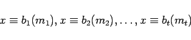 | (5.275) |
vorgegeben, dann spricht man von einem System simultaner linearer Kongruenzen. Eine Aussage über die Lösungsmenge macht der Chinesische Restsatz: Es sei ein System 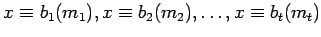 so vorgegeben, daß 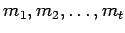 paarweise teilerfremd sind. Setzt man
| 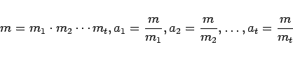 | (5.276a) |
und wählt xj so, daß 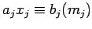 für 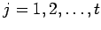 gilt, dann ist
| 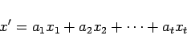 | (5.276b) |
eine Lösung des Systems. Das System ist bis auf Kongruenz modulo m eindeutig lösbar, d.h., mit x' sind genau diejenigen Elemente x'' weitere Lösungen, für die gilt 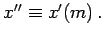
| Beispiel |
|
Es ist das System 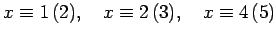 zu lösen, wobei 2, 3, 5 paarweise teilerfremd sind. Es gilt 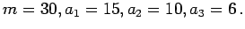 Die Kongruenzen 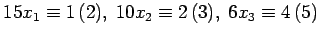 haben die speziellen Lösungen 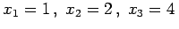. Das gegebene System ist eindeutig lösbar mit 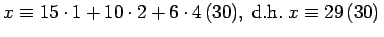. |
Hinweis: Systeme simultaner linearer Kongruenzen kann man benutzen, um die Lösung von nichtlinearen Kongruenzen mit dem Modul m auf die Lösung von Kongruenzen zurückzuführen, deren Modul Primzahlpotenzen sind.